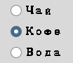
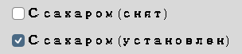

Глава 16 · Создаём классные приложения с Tkinter
Множество вариантов!
Переключатели для выбора одного варианта и флажки для независимых да/нет решений.
Для выбора из нескольких вариантов у Tkinter есть переключатели
(Radiobutton — выбрать один из нескольких) и флажки
(Checkbutton — включить/выключить каждый независимо).

radiobutton.py
import tkinter as tk
root = tk.Tk()
vybor = tk.StringVar(value="chay")
tk.Radiobutton(root, text="Чай", variable=vybor, value="chay").pack()
tk.Radiobutton(root, text="Кофе", variable=vybor, value="kofe").pack()
def pokazat_vybor():
print(f"Вы выбрали: {vybor.get()}")
tk.Button(root, text="Готово", command=pokazat_vybor).pack()
root.mainloop()Группа — это общая переменная
Все переключатели одной группы должны использовать одну и ту же переменную (
variable=vybor у обоих) и разные значения (value="chay" / value="kofe"). Так Tkinter понимает, что это одна группа взаимоисключающих вариантов.🐞 Debug Lab 1: У каждого Radiobutton — своя переменная
slomannaya_gruppa.py
chay_var = tk.StringVar()
kofe_var = tk.StringVar()
tk.Radiobutton(root, text="Чай", variable=chay_var, value="chay").pack()
tk.Radiobutton(root, text="Кофе", variable=kofe_var, value="kofe").pack()# Оба переключателя можно выбрать ОДНОВРЕМЕННО —
# это уже не взаимоисключающий выбор, а два независимых флажка.У каждой кнопки — своя отдельная переменная, поэтому Tkinter не видит связи между ними: выбор одной никак не влияет на другую. Групповое поведение переключателей держится именно на общей переменной, а не на визуальной похожести кнопок.
Исправленный код
gruppa_fixed.py
vybor = tk.StringVar(value="chay")
tk.Radiobutton(root, text="Чай", variable=vybor, value="chay").pack()
tk.Radiobutton(root, text="Кофе", variable=vybor, value="kofe").pack()Checkbutton — независимый выбор

checkbutton.py
saharok = tk.BooleanVar(value=False)
tk.Checkbutton(root, text="С сахаром", variable=saharok).pack()
def pokazat_flazhok():
print(f"С сахаром: {saharok.get()}")Checkbutton — не Radiobutton
Checkbutton — независимое да/нет решение, не связанное с другими флажками. Не путайте его с группой Radiobutton, где выбор одного варианта исключает остальные.Практика: Radiobutton и Checkbutton
Модуль tkinter открывает нативное окно Python — выполните локально в VS Code, PyCharm или Jupyter
Практика выполняется локально